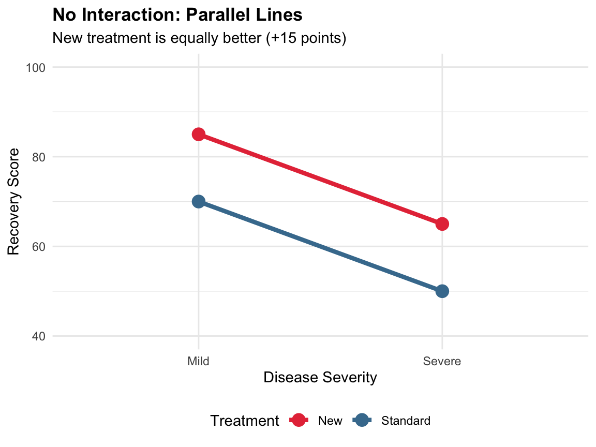

Main Effects vs. Interaction Effects
Suppose we want to understand the effects of treatment and patient group on recovery score:
- Main Effect: The effect of one factor on the outcome, averaged across all levels of the other factor.
- Main effect of Treatment: Does the treatment affect recovery, regardless of patient group?
- Main effect of Patient Group: Do patient groups differ in recovery, regardless of treatment?
- Interaction Effect: The effect of one factor depends on the level of another factor.
- The treatment improves recovery for severe patients but not for mild patients
When there’s a significant interaction, main effects can be misleading!